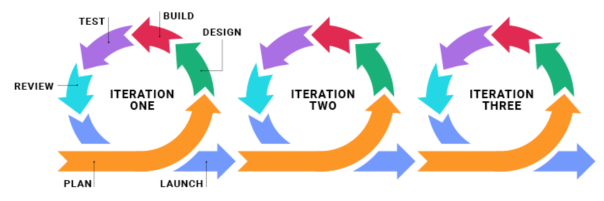
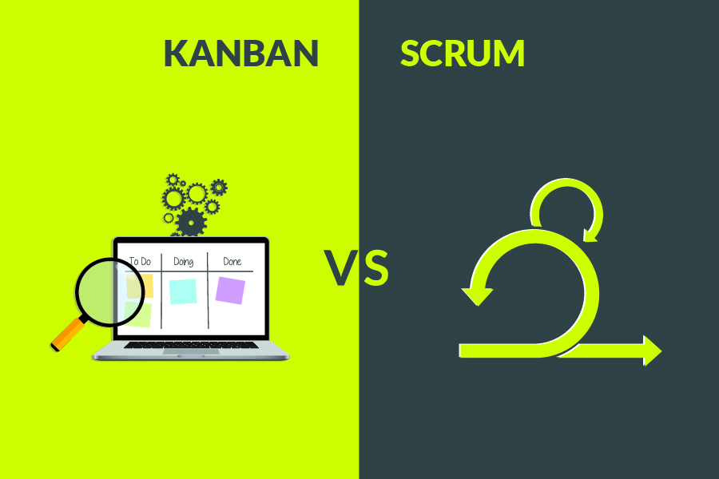
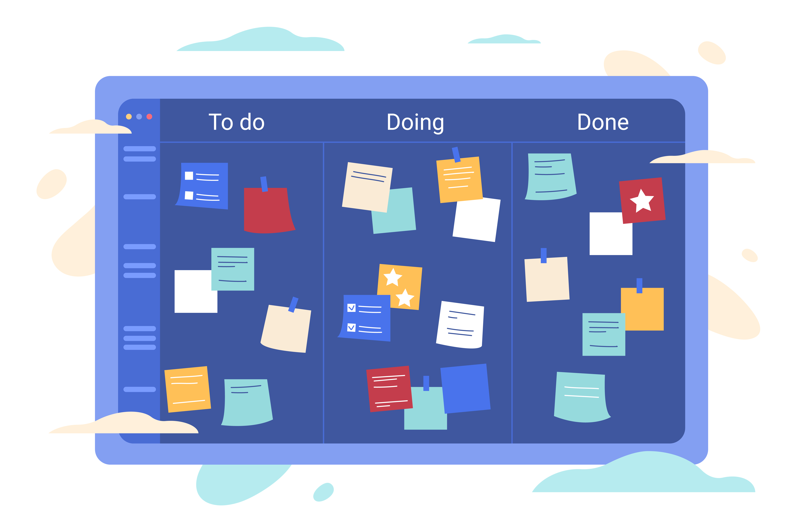

AGILE
Waterfall

Do & Fix
Iterate
The Twelve Agile Manifesto Principles
- Customer satisfaction through early and continuous software delivery.
- Accommodate changing requirements throughout the development process
- The working software needs to be delivered to the client frequently, within 2-16 weeks
- Collaboration between the business stakeholders and developers throughout the project.
- The project is based on motivated people.
- The best way to communicate information in a team is a personal conversation.
- Working software is the primary measure of progress.
- Agile processes to support a consistent development pace.
- Attention to technical detail and design enhances agility.
- Simplicity
- Self-organizing teams encourage great architectures, requirements, and designs.
- Regular reflections on how to become more effective
The Four Values of The Agile Manifesto
The Four Values of The Agile Manifesto
- Individuals and Interactions Over Processes and Tools
- Working Software Over Comprehensive Documentation
- Customer Collaboration Over Contract Negotiation
- Responding to Change Over Following a Plan
Advantages and disadvantages of Agile
Advantages and disadvantages of Agile
| Pros | Cons |
|---|---|
| Flexibility and openness to any changes | The project does not have a clear plan and structure |
| Reduced risks of failure | The need for close communication |
| Resistance to deadlines | Commitment to the team |
| Great team involvement | Too much focus on the little things |
| High speed of reaction to problems | Difficulties with implementation |
| Minimum routine |
Scrum vs Kanban
Scrum
- Dividing the work into parts, which are called sprints (usually two weeks in a sprint)
- Sprints are planned based on the requirements for that particular point in time
- Relative estimation of work completion time
- Review each sprint to understand how it went and what could be improved
- Feedback on the supplied product
- Daily meetings (very short)
Kanban

- Weekly meetings
- Continuous development
- Visualization of the process on the board
- Solving the most important tasks first
- Incremental improvements